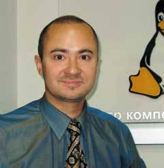

Пожалуй, не будет преувеличением сказать, что операционная система Linux - одно из наиболее заметных и ярких явлений на мировом ИТ-рынке за последние как минимум пять лет. Скромное начинание небольшого коллектива энтузиастов стремительно переросло рамки любительского проекта и буквально ворвалось на корпоративный рынок, заставив очень многих мастодонтов от информационных технологий серьезно пересмотреть свою текущую политику и планы на будущее. И хотя успех Linux ценен уже сам по себе, гораздо важнее то, что он открыл дорогу другим, быть может, менее известным (но не менее значительным) open source-проектам.
Говоря о Linux, невозможно обойти стороной вклад корпорации IBM - вслед за самим Линусом Торвальдсом, рядом его коллег по сообществу и небезызвестной компанией Red Hat, она вне всяких сомнений стала одним из столпов этого проекта. Кроме того, компания внесла неоценимый вклад в развитие всего движения open source - на ее счету не только доработка кода, но и участие в разработке и принятии открытых стандартов, поддержка и активное продвижение перспективных проектов, важных для ИТ-отрасли в целом, и, наконец, гибкая и дружественная к независимым разработчикам патентная политика, результат которой - открытие сообществу open source многих ключевых технологических решений для построения эффективного ПО.
Учитывая все возрастающий интерес отечественных заказчиков к решениям на базе ОС Linux в частности и свободного ПО вообще, мы попросили специалистов из московского Центра компетенции Linux компании IBM ответить на наиболее животрепещущие вопросы, связанные с тематикой open source-проектов. В интервью редактору отдела аппаратных средств Александру Николову руководитель московского Центра компетенции Linux Денис Сосновцев и менеджер по работе с независимыми поставщиками ПО IBM EE/A Андрей Галицкий подробно рассказали об отношении корпорации к системам с открытым исходным кодом, о наиболее важных и интересных проектах open source, в которых участвует IBM, о своем видении этого сектора рынка в ближайшей перспективе.
|  | |
| Денис Сосновцев, руководитель московского Центра компетенции
Linux, IBM EE/A.
|
Андрей Галицкий, менеджер по работе с независимыми поставщиками ПО, IBM EE/A.
|
"BYTE/Россия": В первую очередь давайте поговорим о том, какова на сегодняшний день стратегия IBM в области разработки ПО: какая модель разработки и использования исходных кодов, открытая или закрытая, сейчас считается главенствующей внутри корпорации?
Андрей Галицкий: Давайте сначала уточним, о каком именно ПО идет речь, потому что есть ПО, которое наша компания производит как инфраструктурное для собственных решений - это, например, ОС AIX для RISC-компьютеров и мэйнфреймов, система управления базами данных DB/2, средства управления Tivoli и т. д. В применении к нему сам вопрос не вполне уместен, так как очевидно, что в ближайшие годы даже речи не может идти о его открытии.
Денис Сосновцев: Стратегия IBM такова - мы стремимся к тому, чтобы у наших клиентов был выбор, и пользуемся теми средствами, которые, как мы считаем, для этого наилучшим образом подходят. А в общем надо понимать, что это такое - открытый код, каким образом ведется разработка ПО с открытым кодом, как устроено сообщество свободного ПО. IBM ведет огромное количество разработок продуктов и технологий, распространяющихся по традиционным лицензиям, для многих из них источником вдохновения служат открытые проекты. В то же время есть и обратный процесс - разработки корпорации под свободными лицензиями присутствуют в сообществе open source.
А. Г.: В контексте нашей беседы, наверное, наиболее интересен вопрос о средствах, используемых сторонними компаниями-разработчиками для создания приложений, - мы говорим в первую очередь о таком middleware, как продукты семейства WebSphere, и собственно самих средствах разработки. В этой связи я считаю особенно важным определить разницу между открытым кодом и открытыми стандартами. Абсолютно однозначно IBM в этой области ориентируется на открытые стандарты - стандарты, принятые в индустрии и утверждаемые соответствующими организациями, такими, как Eclipse Foundation или сообщество разработчиков Java. Однако это отнюдь не означает, что автоматически становятся открытыми и коды, разрабатываемые компанией в рамках проектов на базе открытых стандартов, - мы используем гибкую политику, выпуская ПО, построенное на открытых стандартах, как в открытом, так и в закрытом виде. Например, среда разработки приложений Eclipse - это открытый стандарт и открытый код, но какие-то продукты, разработанные IBM на ее основе и являющиеся собственностью компании, уже не относятся к категории open source, хотя при этом целиком и полностью соответствуют открытым стандартам.
Д. С.: Возвращаясь к вашему вопросу, можно сказать, что для компании стратегия в области разработки ПО - это своеобразное двухстороннее движение: что-то мы берем из разработок с открытым кодом, что-то сами предоставляем сообществу open source, но вместе с тем не забываем и о защите собственных интересов, используя традиционные подходы и модели лицензирования там, где это необходимо с нашей точки зрения и где это хорошо для наших клиентов.
А. Г.: В этой области наш подход и сейчас и в будущем довольно гибок - по мере надобности какие-то продукты, несомненно, будут открываться, однако это определенно не будет одномоментное и массовое действо по раскрытию всего спектра ПО от IBM.
"BYTE/Россия": Прокомментируйте, пожалуйста, подробнее - какова с точки зрения IBM сегодняшняя ситуация на рынке ПО open source? В чем, по вашему мнению, наиболее важные тенденции и перспективы на ближайшие годы?
Д. С.: Рынок открытого ПО развивается очень бурными темпами. Флагман этого движения, ОС Linux, по данным аналитиков, на сегодняшний момент - самая быстрораспространяющаяся платформа. Набирает обороты и распространение других открытых продуктов. Для IBM, да и для ИТ-индустрии в целом наибольшую ценность здесь представляет даже не открытый код, а инновационный "коммунальный" подход к разработке и поддержке ПО силами сообщества, применить который, по мере необходимости, мы стараемся везде, где это разумно и эффективно.
"BYTE/Россия": В связи с этим, как вы считаете, - возможна ли полноценная конкуренция между конечными продуктами, созданными в рамках традиционной закрытой модели разработки ПО, и результатами open source-проектов?
Д. С.: Де-факто это уже стало реальностью.
А. Г.: Выражая собственную точку зрения как эксперта, хотел бы отметить, что Linux сейчас играет примерно ту же роль, что в свое время сыграла на рынке ПО операционная система Unix. Когда-то Unix сама была учебно-экспериментальной средой, разрабатываемой в основном университетами, и на рынке коммерческого ПО ее никто серьезно не рассматривал, полагая, что это всего лишь игры для студентов. Постепенно ситуация развернулась в обратную сторону - из экспериментальной площадки Unix превратилась в успешную коммерческую систему. Сейчас тот же самый путь проделывает Linux.
Я думаю, что говорить о том, какую роль будет играть открытое ПО на рынке, не выделяя различные сферы его применения, ни в коем случае нельзя. Если раньше, в уже ушедшие в историю времена, ЭВМ были прерогативой исключительно больших и богатых организаций и вопрос о разделении аппаратной и программной части практически не стоял - ПО входило в комплект наравне с услугами сервисного обслуживания, то сейчас он весьма актуален - компьютеры используются практически повсеместно, и значительную долю заказчиков составляют малые компании, не готовые чрезмерно тратиться на ИТ-инфраструктуру. Поэтому открытое ПО в первую очередь, безусловно, занимает нишу некритичных для бизнеса некоммерческих приложений. В этой связи его диапазон отнюдь не ограничивается ОС Linux: например, самое широкое распространение имеют сервер приложений Apache Tomcat и собственно Web-сервер Apache. Оборотная сторона этого вопроса заключается в том, что при построении какого-либо реального бизнеса с использованием ПО open source заказчик должен самостоятельно и очень серьезно оценивать качество открытого кода, услуги по его сопровождению и доработке, наличие технической поддержки и т. д. Вот тут как раз важно иметь в виду, что, используя на начальном этапе некоммерческие разработки с открытым исходным кодом, построенные на базе открытых стандартов, потребители гарантируют себе свободу маневра - в дальнейшем они смогут безболезненно перейти на коммерческое ПО, пусть даже и закрытое, и получить необходимый им уровень сервиса и надежности.
Понятно, что при любом раскладе всегда будет существовать своя ниша для открытого и закрытого кода, вопрос только в том, каково будет соотношение между ними. Можно также добавить, что в тех случаях, когда какая-либо компания возлагает критически важные с точки зрения ее бизнеса приложения на плечи Linux, всегда существует обслуживающая организация, которая занимается сопровождением этого решения, и тогда вопрос уже переходит в плоскость политики лицензирования - либо вы приобретаете лицензию на ПО, и тогда его сопровождение просто включено в стоимость покупки, либо вы не платите за лицензию, но отдельно оплачиваете сопровождение продукта. В конечном счете важно не то, за что именно вы заплатили, важно, насколько надежно и качественно сработает сервис в ответственный момент.
Д. С.: Хотел бы добавить, что в настоящее время операционные системы становятся товаром широкого спроса; соответственно все менее значим вопрос, какая именно ОС используется в рамках того или иного решения, - до тех пор, пока она базируется на открытых стандартах, - и на первый план выходят вопросы, связанные с сервисным обслуживанием и поддержкой.
А. Г.: Если говорить о тенденциях, я считаю необходимым особо выделить государственный сектор. Это тенденция, которая не только ожидается, но и уже присутствует в течение нескольких лет и во многих странах. Так, в России одним из проявлений этой тенденции стало создание Linux-центра IBM, а наиболее показательным, пожалуй, можно считать опыт Китая. При правильном использовании движение open source может стать весьма мощным инструментом в руках государства, позволяющим решать широчайший круг вопросов - от национальной безопасности до развития конкурентоспособной экономики. Опираясь на локальных разработчиков и держателей кода, можно обеспечить надежность программ и отсутствие вредоносных или шпионских включений в ПО, которое используется в различных государственных проектах, а вместе с тем поддержать отечественную науку и производство, финансируя собственный интеллектуальный потенциал.
"BYTE/Россия": Насколько это актуально для России?
Д. С.: В достаточной мере актуально - например, центр компетенции Linux создавался как совместный проект IBM и Минсвязи. Однако в России, к сожалению, в этом плане пока нет четко выраженной тенденции, такой, как в Китае. Государство проявляет огромный интерес к Linux, но в единую четкую общенациональную политику этот интерес пока не вылился.
"BYTE/Россия": Движение open source уже кардинальным образом повлияло на весь процесс разработки и дальнейшего распространения ПО. Однако не кажется ли вам, что это был только первый шаг и теперь необходим переход от открытых кодов к открытой проектной документации?
А. Г.: С моей точки зрения этот вопрос можно разделить на два. Если говорить об открытых стандартах, то там принят подход к разработке, обратный описанному выше, - есть стандарт, например, тот же Java 2 EE, который в первую очередь регламентирует подготовку спецификаций на программный продукт и описание того, каким нормам он должен соответствовать, а уж разработчики, создавая ПО в соответствии с этим стандартом, вольны самостоятельно решать, открывать им исходный код или нет. Таким образом, вне зависимости от наличия или отсутствия свободного доступа к исходным кодам, документация на тот или иной проект, разработанный в соответствии с открытыми стандартами, всегда будет присутствовать. Если же говорить об открытом коде, то тут все определяется политикой внутри сообщества разработчиков - насколько я понимаю, само участие в open source-проекте подразумевает обязательство публиковать некую документацию, связанную с этим проектом. Хитрость заключается в том, что если уж вы включились в процесс создания продукта с открытым кодом и тем более разработали что-то свое на базе уже имеющегося open source-решения, то вы обязаны вернуть эту разработку в сообщество и открыть ее код, что в определенной степени служит гарантией документированности процесса разработки.
"BYTE/Россия": Расскажите, пожалуйста, подробнее об open source-проектах IBM. Какие из них вы считаете наиболее важными и интересными, каково текущее состояние дел в этих проектах?
Д. С.: Сразу отмечу, что open source-проектов IBM не бывает: настоящий проект open source - это по определению проект, который ведется сообществом, а IBM в нем может лишь играть ту или иную роль. На данный момент корпорация участвует в разработке примерно 150 проектов. Самые известные - разработка ядра Linux, проект Apache, упомянутый выше Eclipse, Grid-проект Globus, платформа Mozilla, Samba. Не так давно, в августе прошлого года, IBM передала в Apache свою разработку в области баз данных - Cloudscape, которая сейчас ведется как проект Apache Derby.
В IBM существует целая организация под названием Linux Technology Center (в нее входит и московский Центр компетенции), которая работает в 40 точках по всему земному шару и обладает штатом более 600 человек, - она, собственно, и занимается всеми этими проектами. Если посмотреть, например, что именно корпорация делает в проекте ядра Linux, то можно выделить несколько областей, где сотрудники IBM играют ведущую роль - по количеству внесенных в ядро изменений компания уверенно занимает третье место после самого Линуса Торвальдса и Red Hat. Порядка 80% внесенных нами предложений было принято сообществом разработчиков.
Деятельность IBM в сфере Linux довольно многолика - 600 с лишним человек в Linux Technology Center участвуют в различных открытых проектах, работая над их улучшением, еще больше людей в лабораториях IBM по всему миру разрабатывает новые продукты корпорации и старается, чтобы подавляющее большинство из них корректно работало с Linux и использовало открытые стандарты, будь то аппаратные решения или программные средства промежуточного слоя. Наконец, у нас есть более 7000 хорошо подготовленных и сертифицированных специалистов по Linux, готовых оказывать консультационные услуги.
"BYTE/Россия": Если можно, чуть подробнее о проекте Globus.
Д. С.: Проект называется Globus Alliance (http://www.globus.org) и занимается разработкой стандартов для создания распределенной вычислительной и сервисной архитектуры Open Grid Services Architecture (OGSA), в рамках которой разрабатывается набор средств Globus Toolkit - как непосредственное практическое воплощение OGSA. Эти средства базируются на открытом ПО и открытых стандартах, позволяя интегрировать вычислительные и информационные решения от разных поставщиков в рамках единой виртуальной среды.
"BYTE/Россия": Подразумеваются только расчетные задачи или обработка данных тоже?
Д. С.: Задача IBM как раз заключается в том, чтобы перенести Grid-технологии из той сферы, где они сейчас наиболее эффективны - это расчетные задачи, - в области, где мы давно и успешно работаем, - бизнес-вычисления и управление информационными потоками. Корпорация весьма существенно способствовала развитию проекта Globus и ведет разработку компонентов, являющихся составными частями Globus Toolkit.
"BYTE/Россия": Каковы планы IBM в отношении ОС Linux - предполагается ли появление собственного дистрибутива, или, может быть, активное участие в каком-либо перспективном проекте?
Д. С.: Лично я не думаю, что имеет смысл заниматься разработкой собственного дистрибутива, по крайней мере на данный момент - количество дистрибутивов в мире и так исчисляется сотнями, так что их вполне достаточно, на любой вкус. О планах разработки и запуска на рынок собственного дистрибутива Linux корпорация не объявляла. На практике мы достаточно активно участвовали и продолжаем участвовать и в деятельности Red Hat, и в деятельности Novell, не в последнюю очередь, кстати, в виде инвестиций. В отрасли отчетливо наблюдается процесс консолидации дистрибьюторов Linux, что выливается в числе прочего и в единые универсальные стандарты, в частности, Linux Standard Base, которые находят все более широкое признание и в традиционных стандартизирующих организациях - таких, как ISO.
Мы обладаем достаточным количеством высококвалифицированных профессионалов в области Linux, успешно работаем на Linux-рынке. Для отдельных применений и конкретных заказчиков мы собираем специализированные комплексы, которые можно назвать и дистрибутивами. Но поставками дистрибутивов общего пользования великолепно занимаются наши партнеры. IBM такой расклад вполне устраивает, и причин его менять мы не видим.
"BYTE/Россия": Таким образом, по вашим оценкам, двух крупных поставщиков - Red Hat и Novell - на корпоративном рынке Linux-решений вполне достаточно, и какой-либо новый проект, буде такой найдется, имеет немного шансов на успех?
Д. С.: Здесь все определяется качеством - качеством продукта, который выходит на сцену, и качеством его поддержки. Рынок сейчас совершенно открыт - каждый может войти со своим продуктом и попытаться убедить заказчиков в его качестве, как это делают те же Red Hat и Novell; ну а результат зависит от огромного количества взаимосвязанных факторов как технического, так и политического плана и практически непредсказуем в явном виде. К примеру, абсолютно некоммерческий дистрибутив Debian GNU/Linux выбран муниципалитетом Мюнхена для перевода ИТ-инфраструктуры города с ОС Windows на Linux, причем техническую поддержку в этом проекте будут оказывать две небольшие местные, немецкие компании. Таким образом, количество дистрибутивов, перевалившее одно время за несколько сотен, на самом деле не играет практически никакой роли - не важно, одним больше или меньше.
"BYTE/Россия": Каковы, с точки зрения IBM, перспективы Linux в корпоративном секторе, ее сильные и слабые стороны в этом сегменте?
Д. С.: Прежде всего стоит отметить, что в корпоративном секторе внедрение Linux началось с инфраструктурных решений: файл-серверы и серверы печати, межсетевые экраны и т. д. Сейчас постепенно происходит движение Linux как операционной системы в нишу критически важных для бизнеса приложений: серверы баз банных, серверы приложений. Очень активно идет процесс внедрения Linux на клиентской стороне - по данным некоторых аналитиков, в прошлом году доля Linux на настольных ПК впервые сравнялась с долей Mac OS от Apple и даже превысила ее. Кроме того, Linux играет роль основы в стратегии IBM "вычисления по требованию" и решениях OnDemand. Это что касается места Linux на корпоративном рынке.
Говоря о сильных и слабых сторонах этой ОС, можно отметить следующее: Linux (впрочем, как и любая другая система) целиком и полностью вписывается в довольно несложную концепцию следующего вида - для каждой задачи есть свои решения. Например, сейчас Linux очень активно начинают использовать на рабочих местах - эта ОС хороша в настольных системах для компьютерных профессионалов, разработчиков и проектировщиков, она неплохо смотрится и в системах с фиксированным набором функций, где благодаря ее гибкости можно легко убрать все лишнее и превратить обычный ПК в высокопроизводительный транзакционный терминал или так называемый тонкий клиент, однако не для всех применений Linux пригодна. Есть и другие области, в которых Linux себя прекрасно зарекомендовала, - те же серверные решения для высокопроизводительных кластерных вычислений, для построения базовой инфраструктуры в качестве сетевых служб, серверов приложений, баз данных. Иначе говоря, в плане оценки сильных и слабых сторон всегда нужно отталкиваться от исходной задачи.
"BYTE/Россия": Не идет ли повышенная активность компании в сфере open source, в частности, увлечение Linux, во вред другим стратегическим направлениям в сфере разработки и продвижения ПО, например, Unix-систем?
Д. С.: Вовсе нет. Наоборот, с помощью Linux мы получаем дополнительные возможности, для того чтобы наиболее полно покрыть все потребности заказчика. В IBM нет тенденции сводить все к каким-то чрезмерно упрощенным схемам и решениям - мы не говорим, что универсальный ответ на все вопросы сводится к open source и применению Linux. У нас одних только серверных аппаратных платформ четыре, и для каждой существует своя сфера применения, так что в каждом конкретном случае мы просто смотрим, какая из них будет наиболее эффективна при решении задач заказчика. Кроме того, обладая огромным опытом в области разработки систем для бизнес-вычислений и наработанным за долгие годы набором технических и технологических решений, IBM без проблем может строить гетерогенные информационные системы, используя при необходимости наработки из разных серий. И компания только выигрывает от такого подхода.
Что же касается противопоставления Linux и Unix, то мы не видим для него реальной почвы, эти системы скорее дополняют друг друга, чем конкурируют, ведь в конце 90-х корпорация сознательно занялась Linux, чтобы покрыть весь рынок ИТ-решений. И сегодня, когда ежегодный прирост в секторе Linux-систем составляет 20, 30, 50, а порой и 100%, мы обладаем эффективными инструментами для работы на нем, а не пытаемся как-то его затормозить или свернуть.
"BYTE/Россия": В начале 2005 г. IBM объявила об открытии целого ряда патентов для широких масс разработчиков. Собирается ли компания делать что-то еще в этом направлении?
Д. С.: Мы, как правило, не обсуждаем, что будет дальше, однако могу сказать, что это, несомненно, одно звено в цепи множества подобных. 500 патентов были открыты в начале года, а в апреле IBM сделала еще один шаг - технологии, заявки на стандартизацию которых IBM будет подавать через организацию OASIS (http://www.oasis-open.org), занимающуюся стандартизацией в области электронного бизнеса, для сторонних независимых разработчиков будут освобождены от лицензионных отчислений в пользу корпорации. Если хотите - с нашей точки зрения, в области патентного права сейчас намечается своеобразная "разрядка", когда компании начинают открывать доступ к своим интеллектуальным накоплениям. Конечно, никто не делает этого в одностороннем порядке, одномоментно и в отношении всей массы накопленных патентов сразу, однако понимание, по крайней мере со стороны IBM, что текущая ситуация в области механизмов работы с интеллектуальной собственностью скорее тормозит развитие индустрии, становится все отчетливее.
"BYTE/Россия": Памятуя о нескольких достаточно громких инцидентах, возникавших в прошлом из-за проблем с патентованием и лицензированием интеллектуальной собственности, хотелось бы поинтересоваться, как IBM планирует защищать свой интеллектуальный багаж в рамках open source-проектов?
Д. С.: Ровно так же, как и во всех своих остальных проектах, - в строгом соответствии с законами об охране авторских прав. Здесь надо отметить, что в большинстве своем участники открытых проектов с самого начала очень щепетильно относились к вопросам, связанным с разного рода юридическими тонкостями, и те люди, например, которых я знаю по сообществу, весьма серьезно настроены на то, чтобы в точности соблюдать все требования лицензий и владельцев авторских прав, так что существенных проблем возникать не должно. Вне зависимости от того, открытый это код или закрытый, IBM будет пользоваться всеми возможностями, предоставляемыми патентным законодательством. Мы будем защищать свою интеллектуальную собственность, но вместе с тем, дабы не сдерживать искусственным путем инновации в ИТ-отрасли, мы и дальше будем действовать достаточно либерально, открывая сообществу патенты, в первую очередь связанные со стандартами взаимодействия, как это было сделано в первой половине 2005 г. Наша стратегия состоит в стимулировании инновации в отрасли ИТ, мы считаем, что "разрядка патентной напряженности" послужит на благо всех участников рынка, и поставщиков, и клиентов.
"BYTE/Россия": Большое вам спасибо за интересную беседу.